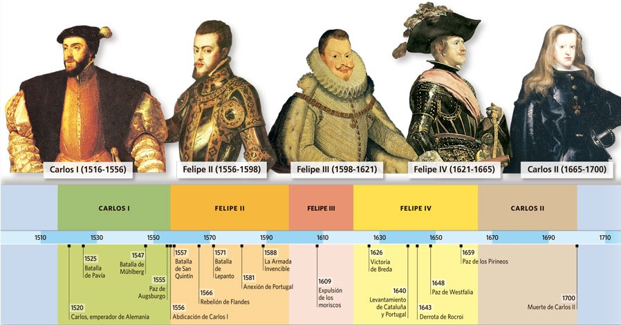

La Casa de Austria es la familia perteneciente a la dinastía de los Habsburgo que reinó en la Monarquía Hispánica. Se dividió entre los Austrias Mayores (Carlos I y Felipe II) y los Austrias Menores (Felipe III, Felipe IV, Carlos II) Durante los reinados de los Austrias se alcanzó y se perdió la hegemonía española en Europa, fue Siglo de Oro de las letras y artes.
